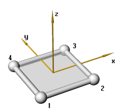
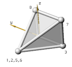
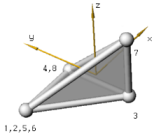
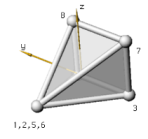
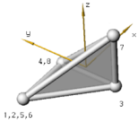

| nr |
Номер элемента - он должен быть уникален, т.е. никакой другой элемент не может иметь подобного номера.
|
| node1,2,.. |

|
Узлы определены против часовой стрелки как указано на рисунке.
На рисунке определено также направление оси x, которое параллельно прямой определенной узлами 1 и 2.
Ось z является норалью к плоскости.
Ось y параллельна прямой, которая определена узлами 1 и 4.
|
|
| thickness |
Толщина shell элемента. Толщина постояннf по всей ширине элемента.
|
| elmaterial |
Имя материалла shell элемента. Это имя должно быть определено в блоке материаллов.
|
| noip |
Количество интегрированых точек по толщине элемента. Все точки от 1 до 5 возможны. Рекомендованое минимальное количество точек интегрирования 3.
|
| nopip |
Число точек интегрирования, с которых будет записываться результат в файл. Их количество может быть от 1 до NIP (значение, указанное в параметре NIP), например если NIP = 5, PIP будет равен 3.
|
| shearfactor |
Это произвольный параметр, описывающий изменение толщины элемента, по умолчанию равен 1.0.
|
| hglass |
Параметр включения и выключения контроля толщины элемента. Может иметь два значения ON или OFF. По умолчанию ON.
|
| mhc |
Коэффициэнт контроля толщины. По умолчанию 0.1.
|
| oophc |
Коэффициэнт контроля выхода из плоскости. По умолчанию 0.1.
|
| rhc |
the Rotational Hourglass Control factor. This factor is
multiplied with the calculated hourglass moments. Default is 0.1.
|
| loadname |
Имя нагрузки, которое определено в блоке нагрузок. Даным способом определяется нагрузка на элемент.
|
| c_factor |
Контактный фактор. Это усилие, возникающее при контакте. Сила увеличивается линейно в процессе приближения и внедрения узла, по умолчанию равен 10.
|
| c_type |
Тип контакта. Значение OFF выключает контакт. По умолчанию используется тип BASIC , который определяет контакт как два элемента Contact_Triangle (контакт между ними определяется по поверхности). Такой контакт хорошо работает при маленьких деформациях элемента.
Параметр ADVANCED используется для включения контакта, при котором используются четыре элемента Contact_Triangle. При использовании этого параметра увеличивается время расчета.
Параметр EDGE позволяет определять контакт по граням элемента и краям. Параметр ADVANCED_EDGE объединяет возможности предыдущих параметров.
|
| friction |
Коэффициэнт трения. Обычно используется в пределах 0,2...0,8. Если контакта контакта нет, коэффициэнт трения не указывается.
|
| thinning |
Определяет изменение толщины элемента при больших деформациях. Его полезно использовать при моделировании процесса пресования. По умолчанию параметр включен (ON). Для выключения используется OFF.
|

 


